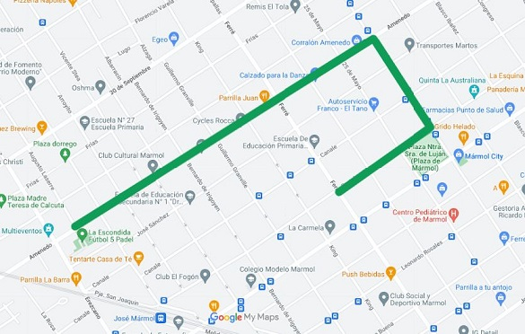

Recorrido-Basura diferenciada

Porcentaje de recorrido completado actualmente
La recolección diferenciada se lleva adelante de 12 a 17. En Adrogué, por ejemplo, se realiza los martes y jueves, al igual que en Burzaco. En Claypole, los miércoles; en Don Orione, los lunes; en José Mármol, los lunes y viernes; y en Glew los viernes, al igual que en Longchamps y Rafael Calzada.
Elegi la fecha para ver el recorrido